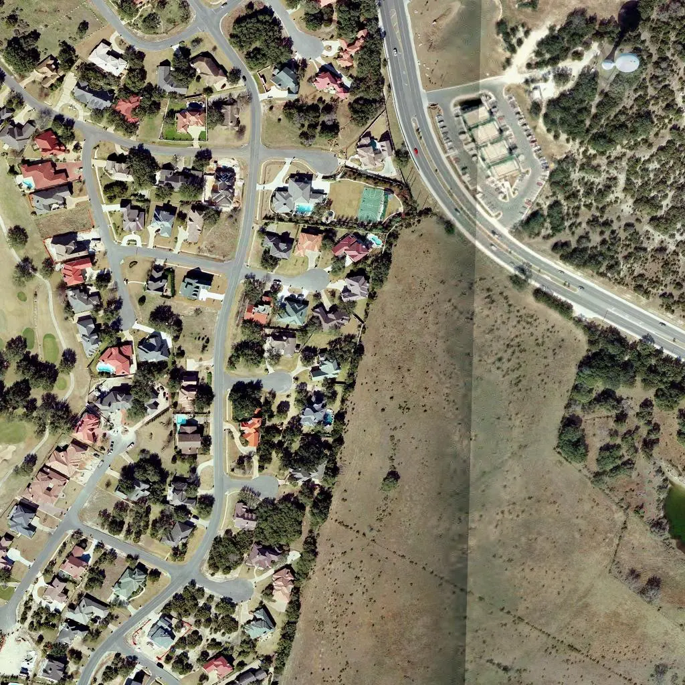
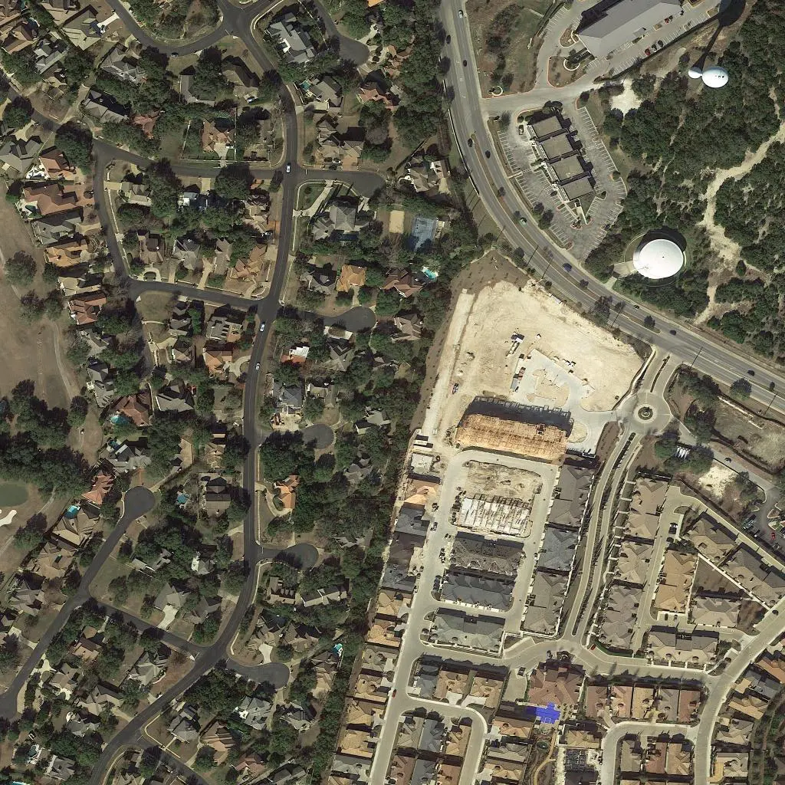

PROJECT SPOTLIGHT
从一张遥感影像，
到变化的地表。
RS Analysis 将建筑分割与双时相变化检测组织为一个可交互的分析流程。
双时相输入样例，来自项目仓库；用于展示数据场景。
查看 RS Analysis
TIME A / 输入样例
TIME B / 输入样例PROJECT ARCHIVE / 项目索引
14 个研究探索、系统实践与独立开发项目。代表研究与工程请从首页开始。
PROJECT SPOTLIGHT
RS Analysis 将建筑分割与双时相变化检测组织为一个可交互的分析流程。
双时相输入样例，来自项目仓库；用于展示数据场景。
查看 RS Analysis
TIME A / 输入样例
TIME B / 输入样例以 3D Gaussian Splatting 为基础，探索自动驾驶场景的几何、语义与时序表征。
探索 Hebbian 局部学习与深层视觉网络的结合，关注表征学习、训练机制与参数效率。
结合轻量语言模型的属性先验与视觉分割，探索未见类别的语义理解。
在 Webots 中连接视觉感知、空间表征、路径规划与飞行控制。
用 Verilog 探索处理器基础模块，并通过 AAOS 引导实验理解硬件、指令集和系统软件的关系。
结合近红外主动标记、图像采集与嵌入式处理，探索机器人距离感知。
使用 LSTM 预测风光功率，探索绿电制氢、热电联产与储能的协同调度。
跨平台桌宠与语音交互工程，将桌面客户端和 GPT-SoVITS 语音服务连接起来。
围绕 Terraria 的内容扩展与渲染开展模组开发，探索游戏图形与交互。
围绕 Minecraft 战斗场景进行镜头跟随与视角控制的模组实践。
通过 Base64 图像折叠与嵌入处理，改善包含大量图文的笔记编辑体验。
将校园网认证、连接保活与重连流程整理为便于日常使用的桌面工具。
从原理图、PCB 布局到外设驱动与实时任务调度，学习软硬件协同调试。
围绕航拍小目标探索检测网络改进，开展模块组合与检测效果分析。